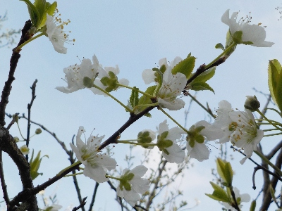
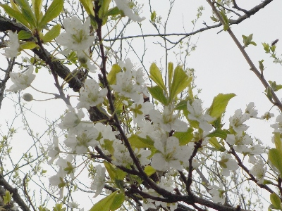
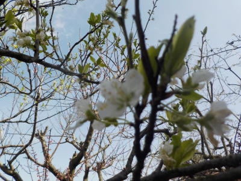
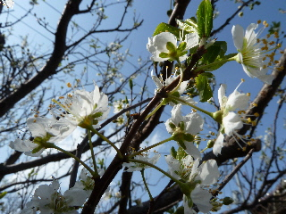

更新日 : 2026/03/28

剪定して樹高を低くしたので枝が重なっていません。すっきりしたので空がよく見えますね。
実が出来たら収穫が簡単です。木が小さくなった分、収穫は少ないと思いますが。
更新日 : 2024/03/30

今年はいつもの年より花が多い気がする。
花が咲いても実ができないと意味がない気もしますが、きれいなのでいいかな。
更新日 : 2023/03/25

沢山実になりますように。
更新日 : 2013/03/23

小さい花が沢山咲いてます。
小さすぎるし、葉っぱも出てるのであんまり目立たないです。
花がいっぱいだけど、何個が実になるのかなー？
なにげに放置時間が長いので心配になります。湿気った土での長期間は難しそう。